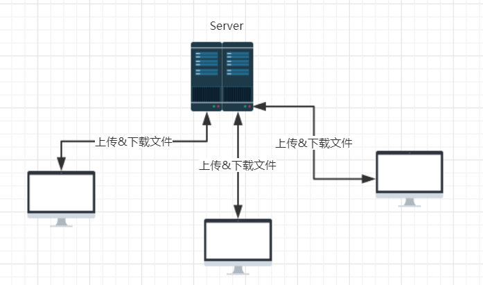

Git&GitHub
- 版本控制
- Git简介
- Git命令行操作
- Git图形化界面操作
- Gitlab服务器环境搭建
1、为什么需要版本控制
1)、如我们现在有一个Test1.class,其中有一个add方法，最初我们的想法仅仅是简单的求和；而后期我们可能想在这个方法开始和结束都添加一些日志，那么这个时候我们的Test1.class将如2所示；随着项目开发，业务需求变更，我们想要在这个add方法上拓展更多功能，比如对参数的校验,a,b参数必须大于0，如果小于0则返回-1，那么产生了3，而某一天，业务突然说，这个add()求和参数不需要控制，0也可以，那这个时候就又只能去修改代码了；但这个时候你想到这个不就是上次的版本吗，如果能记录上次的版本，我直接回退到上次不就好了吗！那这个时候版本控制就显得非常有必要了。
2)、我们知道项目开发一般都是多人协同开发，那么就存在多人编写or修改同一个文件，并不一定是顺序执行的，可能A修改了add方法，B也修改了add方法，而B不一定在A的基础上改写的，此时，如果上传到服务器，就会覆盖A的功能，这也是一个很重要的问题！
//1
public class Test1 {
public int add(int a,int b){
int result= a+b;
return result;
}
}
//2
public class Test1 {
public int add(int a,int b){
System.out.println("add 方法开始执行");
int result= a+b;
System.out.println("add 方法执行完成");
return result;
}
}
//3
public int add(int a,int b){
System.out.println("add 方法开始执行");
if(a==0||b==0){
return -1;
}
int result= a+b;
System.out.println("add 方法执行完成");
return result;
}
2、版本控制工具应该具备的功能
- 协同修改
- 多人并行不悖的修改服务器端的同一个文件
- 数据备份
- 不仅保存目录和文件的当前状态，还能够保存每一个提交的历史状态
- 版本管理
- 在保存每一个版本的文件信息的时候要做到不保存重复数据，以节约存储空间，提高运行效率，这方面SVN采用的是增量是管理方式，而Git采用的是文件系统快照的方式。
- 权限控制
- 对团队中参与开发的人员进行权限控制
- 对团队外开发者贡献的代码进行审核--Git独有
- 历史记录
- 查看修改人、修改时间、修改内容、日志信息
- 将本地文件恢复到某一个历史状态
- 分支管理
- 运行开发团队在工作过程中多条生产线同时推进任务，进一步提高效率
- 分支管理一直是git最自豪的地方，log都是分支的形状
3、版本控制工具
- 集中式版本控制工具
- CVS、SVN、VSS....
- 不足：文件上传&下载全部依赖服务器，当服务器一旦宕机，所有的历史记录全部丢失，有单点故障的问题

- 分布式版本控制工具
- Git、Mercurial、Bazaar、Darcs....
- 每一台电脑上都克隆了一个完整的仓库，保存了完整的记录，如果某天你的电脑宕机，直接拷贝其他人的即可
- 不过通过这种本地库传输文件的方式不太推荐，一般git都会有一个远程库

- Linux版本控制历史

4、Git的优势
- 大部分操作在本地完成，不需要联网
- 完整性保证
- 尽可能添加数据而不是删除或修改数据
- 分支操作非常快捷流畅（基于hash）
- 与Linux命令全面兼容